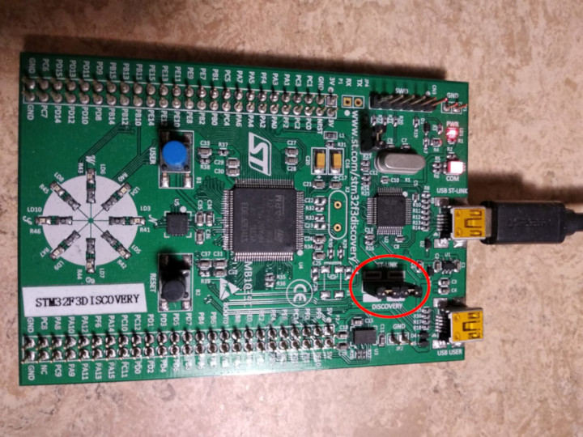

验证安装
在这一部分我们检查需要的工具/驱动是否被正确安装.
把Discovery开发板连接到电脑. Discovery有两个USB口, 使用在板子中间标着"USB ST-LINK"的口.
也检查ST-LINK的接口是否被污染. 看如下图片, ST-LINK接口被红线圈中.

现在运行如下命令:
$ openocd -f interface/stlink.cfg -f target/stm32f3x.cfg
你应该会得到如下输出并且命令行被阻塞:
Open On-Chip Debugger 0.10.0
Licensed under GNU GPL v2
For bug reports, read
http://openocd.org/doc/doxygen/bugs.html
Info : auto-selecting first available session transport "hla_swd". To override use 'transport select <transport>'.
adapter speed: 1000 kHz
adapter_nsrst_delay: 100
Info : The selected transport took over low-level target control. The results might differ compared to plain JTAG/SWD
none separate
Info : Unable to match requested speed 1000 kHz, using 950 kHz
Info : Unable to match requested speed 1000 kHz, using 950 kHz
Info : clock speed 950 kHz
Info : STLINK v2 JTAG v27 API v2 SWIM v15 VID 0x0483 PID 0x374B
Info : using stlink api v2
Info : Target voltage: 2.919881
Info : stm32f3x.cpu: hardware has 6 breakpoints, 4 watchpoints
内容并不会完全一样, 但你应该会看到有关断点和观察点的最后一行. 如果没什么问题那就关掉OpenOCD然后到下一部分.
如果你没看到 "断点" 这一行, 那试试如下命令.
$ openocd -f interface/stlink-v2.cfg -f target/stm32f3x.cfg
$ openocd -f interface/stlink-v2-1.cfg -f target/stm32f3x.cfg
如果有一条命令成功了, 这意味这你手上的是个旧版本Discovery. 那不会有什么问题, 除了内存设置会在后面有些不同, 到下一部分.
如果这些命令都用不了, 那就试试使用root权限(像是sudo openocd ...). 如果命令能够执行, 那么检查一下udev规则是否正确.
如果到这, 你的OpenOCD还是不能用, 那就来发个issue然后我们来帮你!